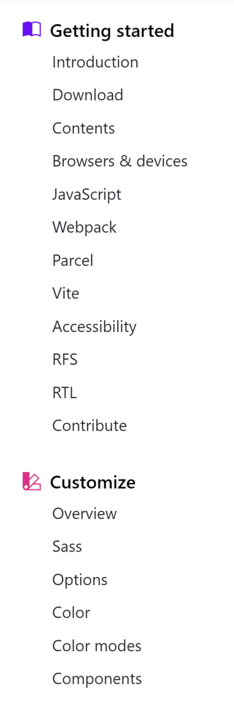
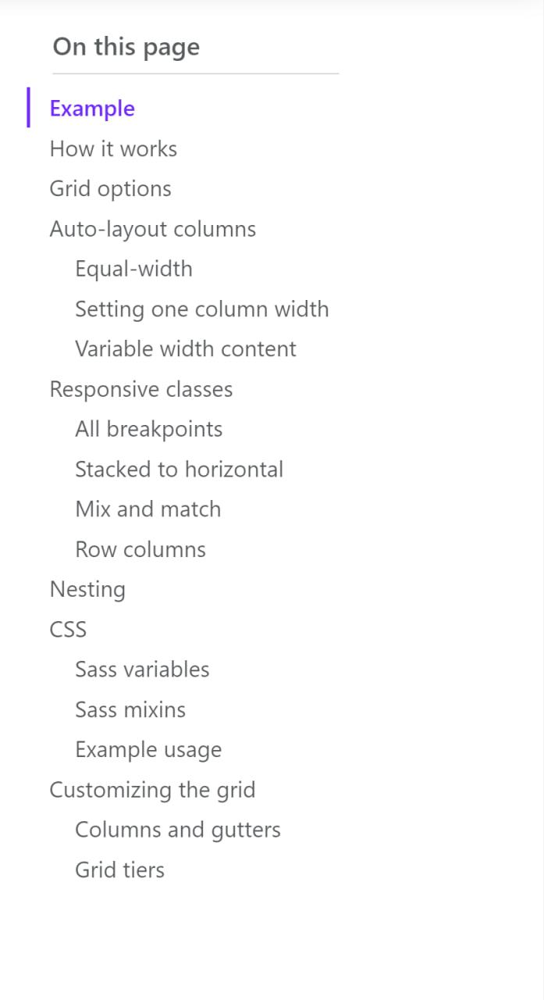

Grid system
Use our powerful mobile-first flexbox grid to build layouts of all shapes and
sizes thanks to a twelve column system, six default responsive tiers, Sass
variables and mixins, and dozens of predefined classes.
Example
Bootstrap’s grid system uses a series of containers, rows, and columns to layout and align content. It’s built with
flexbox and is fully responsive. Below is an example and an in-depth explanation for how the grid system comes
together.
How it works
Breaking it down, here’s how the grid system comes together:
- Our grid supports six responsive breakpoints. Breakpoints are based on min-width media queries, meaning they affect that breakpoint and all those above it (e.g., .col-sm-4 applies to sm, md, lg, xl, and xxl). This means you can control container and column sizing and behavior by each breakpoint.
- Containers center and horizontally pad your content. Use .container for a responsive pixel width, .container-fluid for width: 100% across all viewports and devices, or a responsive container (e.g., .container-md) for a combination of fluid and pixel widths.
- Rows are wrappers for columns. Each column has horizontal padding (called a gutter) for controlling the space between them. This padding is then counteracted on the rows with negative margins to ensure the content in your columns is visually aligned down the left side. Rows also support modifier classes to uniformly apply column sizing and gutter classes to change the spacing of your content.
- Columns are incredibly flexible. There are 12 template columns available per row, allowing you to create different combinations of elements that span any number of columns. Column classes indicate the number of template columns to span (e.g., col-4 spans four). widths are set in percentages so you always have the same relative sizing.
- Gutters are also responsive and customizable. Gutter classes are available across all breakpoints, with all the same sizes as our margin and padding spacing. Change horizontal gutters with .gx-* classes, vertical gutters with .gy-*, or all gutters with .g-* classes. .g-0 is also available to remove gutters.
- Sass variables, maps, and mixins power the grid. If you don’t want to use the predefined grid classes in Bootstrap, you can use our grid’s source Sass to create your own with more semantic markup. We also include some CSS custom properties to consume these Sass variables for even greater flexibility for you.
Be aware of the limitations and bugs around flexbox, like the inability to use some HTML elements as flex containers.
